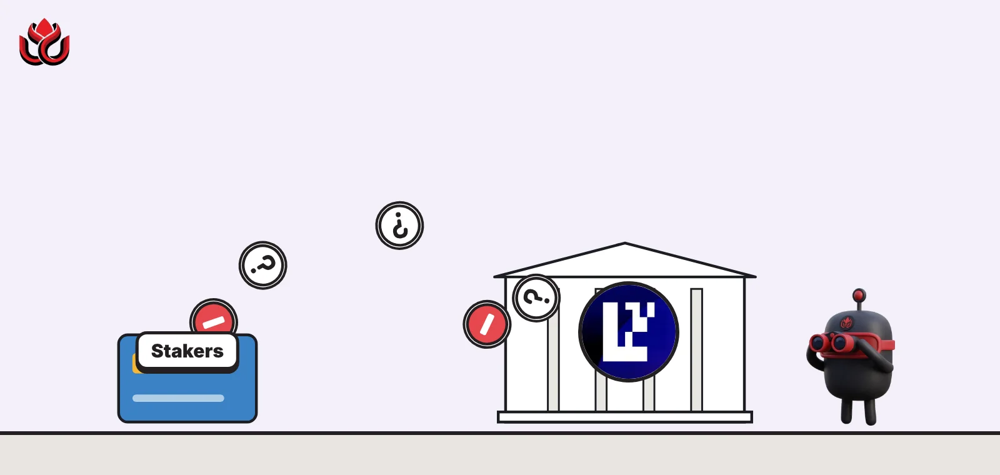
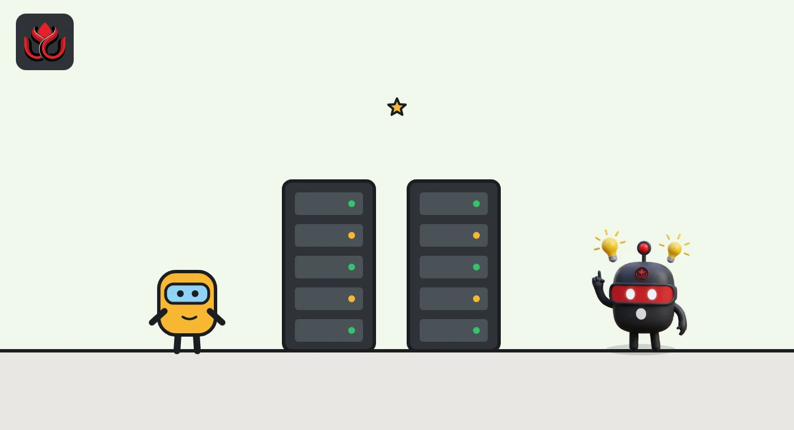
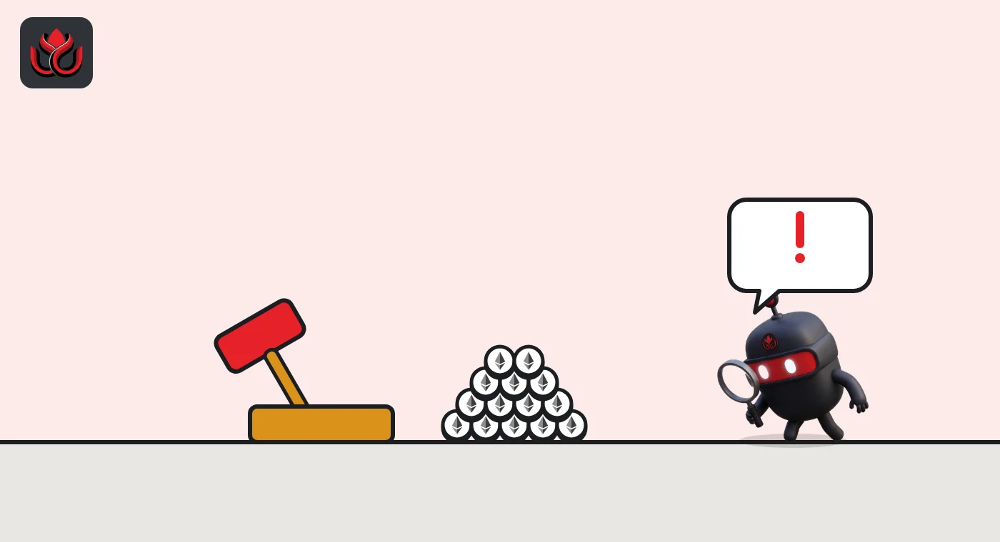

What is restaking? EigenLayer explained, from extra rewards to slashing risk
Restaking lets stakers put the same stake to work securing extra services for extra rewards. EigenLayer is the main protocol for it: stakers deposit assets, operators run the services, and those services can slash stake when rules are broken.

Key points
- Restaking means pledging staked ETH, or other tokens, to secure extra services on top of Ethereum.
- On EigenLayer, stakers deposit assets and delegate to operators, who run software for services called AVSs.
- EigenLayer accepts native ETH, liquid staking tokens, the EIGEN token and any ERC-20 token.
- AVSs can slash an operator's allocated stake. After a 7-day delay, slashed funds are burned or sent to a named recipient.
What is restaking?
On Ethereum, validators lock ETH as a security deposit. If they cheat, part of it can be destroyed. That deposit is what makes the network expensive to attack.
Restaking reuses the idea. Stakers opt in to put stake behind additional services. In return they can earn extra rewards, and they accept extra ways to lose money. EigenLayer says it lets users extend Ethereum's security to other applications, so new projects do not need to build their own security network from scratch, per its docs.
How does EigenLayer work?
Three groups meet in EigenLayer, which its docs call a marketplace for trust:
- Stakers (also called restakers) deposit assets into EigenLayer's contracts and delegate them to an operator, or run validation themselves. Delegation needs a double opt-in: both staker and operator must agree.
- Operators register on EigenLayer, accept delegated stake and run the software for the services they choose to support.
- AVSs are the services. The docs describe them as services built outside EigenLayer that need a set of operators to actively verify their work, such as checking that code ran correctly.
EigenLayer accepts native ETH, liquid staking tokens (LSTs, tokens that stand for staked ETH), the EIGEN token and any ERC-20 token.

How do restaking rewards work?
AVSs pay operators and stakers when their services run properly. They send reward tokens to stakers and operators for taking part. EIGEN tokens are also minted by the protocol to stakers and operators as programmatic incentives, per EigenLayer's key terms page.
There is no single EigenLayer yield. What you earn depends on which AVSs your operator serves and what they pay.
EigenLayer also offers Duration Vaults, where stakers commit stake for a fixed period. With a Duration Vault, a staker delegates to the vault and deposits for a set term, so an AVS knows the stake will stay in place for that period, per EigenLayer's overview. The trade-off is less flexibility: money committed for a term cannot simply leave when conditions change.
What happens when you restake, step by step?
- Deposit: a staker puts native ETH, an LST, EIGEN or another supported ERC-20 into EigenLayer's contracts.
- Delegate: the staker picks an operator. The operator must accept too.
- Allocate: the operator commits part of its delegated stake to the operator sets of the AVSs it serves. That slice becomes unique stake for that AVS.
- Work and get paid: the operator runs the AVS software. The AVS pays rewards to operators and stakers.
- Penalty, if any: if the operator breaks the AVS's rules, the AVS can slash the allocated slice. After 7 days, the slashed funds are burned or redistributed.
- Exit: to leave, the staker withdraws after EigenLayer's safety delays, with any slashing applied first.

How does slashing work on EigenLayer?
Slashing is the penalty side. An AVS can slash an operator that breaks its commitments. The slashing docs set out the limits:
- Operator sets: each AVS groups operators into operator sets for specific tasks.
- Unique stake: operators allocate part of their delegated stake to a specific operator set. Only that AVS can slash that slice, up to the full amount allocated.
- Flexible rules: slashing conditions do not have to be provable onchain. The docs encourage AVSs to build clear, legible processes and put the duty on operators to understand the rules and risks before they sign up.
Slashed funds do not move at once. After a 7-day delay, anyone can trigger the final step. In standard operator sets the funds are burned. In redistributable operator sets they go to a recipient the AVS named when it created the set. Native ETH cannot be redistributed: when slashed, it stays locked in EigenPod contracts for good. EIGEN was also left out of redistribution at launch.
Only ERC-20 assets can be redistributed, including LSTs and AVS tokens. That is why the choice between a standard and a redistributable operator set matters to stakers: in the first case a slash destroys value, in the second it moves value to someone else.
What are allocations and magnitudes?
These two terms explain how one pile of stake can back several services without being promised twice. EigenLayer's key terms page defines an allocation as an operator's onchain commitment to secure a given AVS operator set. It marks part of the operator's delegated stake as unique stake that only that AVS can slash.
Magnitude is the bookkeeping behind it. It tracks what share of its delegated stake in each asset an operator has allocated to operator sets, and the shares cannot add up to more than the total. If an operator allocates 30% of its stake to one AVS and 20% to another, a slash by the first AVS can only touch that 30%.
This design limits contagion. Under the slashing rules, an AVS can only slash stake that is allocated to its own operator set, after the operator registered and after the required delays. A failure at one service should not reach stake committed to another.
How is restaking different from staking and liquid staking?
Plain staking secures Ethereum and earns Ethereum's rewards. Liquid staking wraps that stake in a token you can trade or use in DeFi. Restaking adds another layer: the stake, or the liquid staking token, is also pledged to other services.
Each layer can add yield, and each adds a new way to lose money. A restaked liquid staking token carries the risks of Ethereum staking, of the token's issuer and of every AVS its operator serves.
What are the risks of restaking?
- Slashing by AVSs: your stake can be cut for an operator's failure at a service you may not follow closely.
- Operator choice: stakers depend on the operators they pick and on the AVSs those operators join.
- Redistribution: EigenLayer's docs warn that redistributable operator sets may pay more but carry higher slashing risk.
- Offchain rules: slashing conditions need not be provable onchain, so stakers rely on the AVS's process.
- Delays: moving assets out of EigenLayer passes safety delays, and any pending slashing applies first.
- Smart contracts: restaking adds new contracts on top of Ethereum. The original design is set out in EigenLayer's whitepaper.
LC Insight analysis
This section is our reading of the facts above, not a statement of fact.
- Slashing turned restaking from a points chase into a real risk market. Stakers now need to know which AVSs their operator serves and under what rules.
- Redistribution is the feature to watch. Sending slashed funds to a named recipient can make AVSs more useful, but it also raises the payoff for anyone who can trigger or game a slash.
- Restaking stacks risks. A restaked liquid staking token carries Ethereum staking risk, the issuer's risk and the risk of every AVS its operator serves, and extra yield is only worth it if you can name them.
What's next
- AVSs adopting redistributable operator sets
- The first large slashing events and how they are handled
- Changes to EIGEN incentives
Frequently asked questions
What can I restake on EigenLayer?
Native ETH, liquid staking tokens, the EIGEN token and any ERC-20 token, per EigenLayer's docs.
What is an AVS?
A service built on EigenLayer that needs a set of operators to verify its work. It pays rewards and can slash operators that break its rules.
What happens to slashed funds?
After a 7-day delay, they are burned in standard operator sets or sent to a named recipient in redistributable sets. Slashed native ETH stays locked in EigenPod contracts.
Does EigenLayer pay a fixed yield?
No. Rewards come from AVSs and from EIGEN incentives, and they vary by service and operator.
Disclaimer. This article is based on public information and the sources listed below as of the update time shown. It is for information only and is not investment, legal or tax advice. Figures may change as companies and authorities publish new data.